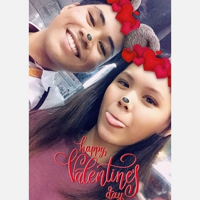
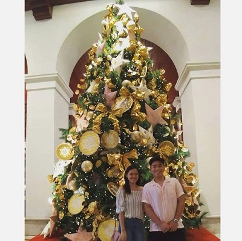

• • • • • • • • • • • • • • • • • • • • • • • • • • Our Memories • • • • • • • • • • • •
A Letter to You • • • • • • • • • • • •
Song • • • • • • • • • • • • • • • • • • • • • • • • • •
Our Memories
High School Graduation
Prom!
Christmas Vacation 2017
UST Paskuhan 2017
Valentine's 2018

First Anniversary!!
Aqua Planet!
Christmas 2018

A Letter to You
My True Love Hath My Heart by Sir Philip Sidney
My true love hath my heart, and I have his,
By just exchange one for the other given:
I hold his dear, and mine he cannot miss;
There never was a bargain better driven.
His heart in me keeps me and him in one;
My heart in him his thoughts and senses guides:
He loves my heart, for once it was his own;
I cherish his because in me it bides.
His heart his wound received from my sight;
My heart was wounded with his wounded heart;
For as from me on him his hurt did light,
So still, methought, in me his hurt did smart:
Both equal hurt, in this change sought our bliss,
My true love hath my heart, and I have his.
Litsen to this song that I'm dedicating for you!